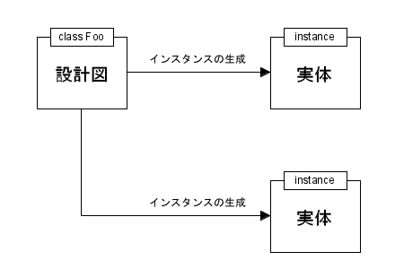
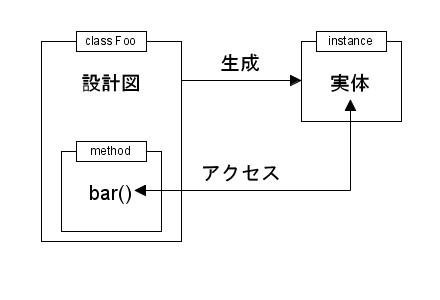

前回はイテレータと高階関数について説明しました。今回は Ruby のオブジェクト指向機能について説明します。プログラミングに興味のある方ならば、オブジェクト指向という言葉は聞いたことがあると思います。よく使われているオブジェクト指向言語にＣ++や Java があります。Ｃ++はオブジェクト指向プログラミングができるようにＣ言語を拡張したものですが、度重なる機能追加により複雑な言語仕様になってしまいました。
Java のオブジェクト指向はＣ++よりも簡単だといわれていますが、Ｃ++と同じようにバージョンアップするたびに新しい機能が追加されるので、Java のオブジェクト指向機能もかなり複雑になりつつあります。初心者 (M.Hiroi を含む) からみると、どちらのオブジェクト指向も大変難しい、と思われている方が多いのではないでしょうか。
その点、Ruby は初めからオブジェクト指向言語として設計されているため、すっきりとした言語仕様になっています。Ruby はわかりやすくて使いやすいプログラミング言語ですが、これはオブジェクト指向機能にもあてはまるのです。まずは最初に一般的なオブジェクト指向について簡単に説明します。
プログラムを作る場合、全体を小さな処理に分割して個々の処理を作成し、それらを組み合わせて全体のプログラムを完成させます。このとき、基本的な部品となるのが関数です。つまり、処理を関数単位で分割して、それらを組み合わせてプログラムを作るわけです。もともと関数の役割は、入力されたデータを処理してその結果を返すことです。つまり、関数は機能を表しているのです。このため、全体を小さな処理に分割するにしても、機能単位で行われることが普通です。
オブジェクト指向プログラミングでは、関数ではなく「オブジェクト (object)」を部品として扱います。たとえば、えんぴつを考えてみましょう。えんぴつには、色、長さ、固さ、などいろいろな性質があります。そして、えんぴつを使って文字を書いたり、絵を描いたりすることができます。プログラムでは、このような性質をデータで表し、機能を関数で表すことになります。そしてオブジェクトとは、このデータと関数を結び付けたものなのです。
いままでのプログラミング言語では、データと関数を別々に定義するため、それを一つのオブジェクトとして表すことができません。えんぴつで文字を書くときは、えんぴつの種類をチェックして文字を書くようにプログラムしなければいけません。ところが、オブジェクトはデータと関数を結び付けたものなので、自分がなにをしたらよいかわかっています。えんぴつオブジェクトに文字を書けと命じれば、それが赤えんぴつのオブジェクトであれば文字は赤に、黒えんぴつのオブジェクトであれば黒い文字になるのです。
このように、オブジェクトはデータと関数を一つにまとめたものです。従来のプログラミングが全体を機能単位で分割するのに対し、オブジェクト指向プログラミングでは全体をオブジェクト単位に分割して、それを組み合わせることでプログラムを作成します。
ところで、データと関数を結び付けることは、従来のプログラミング言語でも可能です。オブジェクト指向はプログラミングの考え方であり、Ｃ++のようなオブジェクト指向言語を使わなくても、たとえばＣ言語でもその考え方にしたがってプログラムを作れば、オブジェクト指向プログラミングが可能です。
実際、オブジェクト指向には様々な考え方があり、いろいろなオブジェクト指向言語が存在します。ですが、データと関数を一つにまとめたものをオブジェクトとして扱うという基本的な考え方は、オブジェクト指向言語の元祖と言われる Smalltalk でも、Ｃ++, Java, Ruby でも同じです。
次は、一般的なオブジェクト指向機能 [*1] について簡単に説明します。「クラス (class)」はオブジェクトの振る舞いを定義したものです。ここでデータを格納するための変数や、それを操作する関数を定義します。この変数をメンバ変数とかインスタンス変数といい、関数を「メソッド (method)」といいます。メソッドはあとで説明します。
クラスはオブジェクトの設計図にあたるもので、オブジェクトの「雛形」と呼ぶこともあります。クラスはオブジェクトの振る舞いを定義するだけで、アクセスできる実体はなにも生み出していない、ということに注意してください。
このクラスから実体として作り出されるのが「インスタンス (instance)」です。このインスタンスを「オブジェクト」と考えてください。インスタンスを生成する方法は、当然ですがプログラミング言語によって違います。たとえば Ｃ++や Java は new を使います。図 1 を見てください。

図 1 : クラスとインスタンスの関係
クラスはオブジェクトの定義を表すものですから、Foo というクラスは一つしかありません。これに対し、インスタンスはクラスから生み出されるオブジェクトです。たとえば、クラス Foo に new を適用することで、いくつでもインスタンスを生み出すことができるのです。
メソッドはオブジェクトと結びついた関数です。オブジェクト指向プログラミングでは、ほかの関数から直接オブジェクトを操作することはせず、メソッドを呼び出すことで行います。メソッドは、クラスが異なっていれば同じ名前のメソッドを定義することができます。たとえば、クラス Foo1 にメソッド bar() が定義されていても、クラス Foo2 に同名のメソッド bar() を定義することができます。
そして、ここからが重要なのですが、あるオブジェクトに対してメソッド bar() を呼び出した場合、それが Foo1 から作られたオブジェクトであれば、Foo1 で定義された bar() が実行され、Foo2 から作られたオブジェクトであれば、Foo2 で定義された bar() が実行されるのです。このように、オブジェクトが属するクラスによって実行されるメソッドが異なります。これを「ポリモーフィズム (polymorphism)」と呼びます。これにより、オブジェクトは自分が行うべき適切な処理を実行できるわけです。
クラス、インスタンス、メソッドの関係は図 2 のようになります。
 図 2 : クラス、インスタンス、メソッドの関係
クラスという設計図が中心にあり、そこからインスタンスが生み出され、メソッドを使ってインスタンスを操作する、という関係になります。
さて、一般的な話はここまでにして、Ruby のオブジェクト指向機能に目を向けてみましょう。Ruby は class 文でクラスを定義します。class 文の構文を図 3 に示します。
class class_name < super_class
...
end
図 3 : class 文の構文
class の次にクラス名を指定し、次の < の後ろに他のクラスを指定すると、そのクラスの機能を引き継ぐことができます。この機能を「継承」といいます。継承は次回以降で詳しく説明します。< 以降を省略すると継承は行われません [*2]。
一番簡単なクラス定義を示しましょう。リスト 1 を見てください。
リスト 1 : クラス定義 class Foo end
一般に、クラス名は英大文字 [*3] から始めることが多いので、名前は Foo としました。Foo はクラス名しかありませんが、これでも立派なクラスなのです。次の例を見てください。
irb> class Foo irb> end => nil irb> a = Foo.new => #<Foo: ... >
Ruby の場合、インスタンスはメソッド new() で生成します。Foo クラスのインスタンスを生成する場合は Foo.new() になります。Foo.new() を呼び出すとき引数を指定することができます。これはあとで説明します。
Ruby のインスタンス変数は、他のオブジェクト指向言語のそれとはちょっと変わっています。Ruby には class 文でインスタンス変数を定義する特別な構文はありません。Ruby は @ で始まる変数をインスタンス変数として扱います。そして、関数のローカル変数と同様に、インスタンス変数への代入が行われると、Ruby はその変数をインスタンス内に生成します。
Ruby の場合、インスタンス変数にアクセスできるのは、クラス内で定義されたメソッドだけです。他の関数や他のクラスのメソッドなど外部からアクセスすることはできません。
メソッドを経由してデータにアクセスすることを「データ抽象」とか「カプセル化」といいます。わざわざアクセスメソッドを用意するのは面倒なようですが、そのことによりオブジェクト (データ構造) の内部を気にしなくてもすみます。それだけプログラムも読みやすくなり、修正にも強いプログラムを作ることができます。
メソッドは関数と同じく def 文で定義します。Ruby の場合、class 文の中で定義された関数がメソッドになります。次の例を見てください。
リスト 2 : メソッドの定義
class Foo
# 初期化
def initialize(value)
@bar = value
end
# 表示
def show
print @bar, "\n"
end
end
メソッド initialize() は new() でインスタンスを生成するとき自動的に呼び出されます。new() を呼び出したときの引数が initiailze() の引数として渡されます。initialize() では必要なインスタンス変数を初期化します。この例では、引数 value の値でインスタンス変数 @bar を初期化します。メソッド show() はインスタンス変数 @bar の値を表示するだけです。
それでは実行してみましょう。
irb> a = Foo.new 100 => #<Foo: ... > irb> a.show 100 => nil
ところで、場合によっては直接インスタンス変数にアクセスしたいこともあります。次のメソッドを定義すると、外部からインスタンス変数に直接アクセスすることができるようになります。
リスト 3 : リーダーとライターの定義
class Foo
# リーダー
def bar
@bar
end
# ライター
def bar=(value)
@bar = value
end
end
リーダー/ライターメソッドが定義されると、object.bar でインスタンス変数 @bar の値を得ることができ、object.bar = 1000 で @bar の値を更新することができます。Ruby にはこれらのメソッドを自動的に生成する方法が用意されています。class 文の中で表 1 のメソッドを呼び出します。
| メソッド名 | 機能 |
|---|---|
| attr_reader :name, ... | リーダーの設定 |
| attr_writer :name, ... | ライターの設定 |
| attr_accessor :name, ... | リーダー/ライターの両方を設定 |
name には変数名を指定します。たとえば、リーダー/ライターメソッドを設定したい場合は、リスト 4 のように指定します。
リスト 4 : アクセスメソッドの定義 class Foo attr_accessor :bar ... end
これで、メソッド bar() と bar=() が設定されます。
Ruby のメソッドは public, protected, private という 3 通りのアクセス制御を行うことができます。public メソッドはどこからでも呼び出すことできます。クラス内で定義されるメソッドはデフォルトで public に設定されます。public は一般に公開するメソッドに使います。
private メソッドは同一クラス (またはそのサブクラス) からしか呼び出すことができません。また、object.method() という形式で呼び出すこともできません。つまり、関数的な使い方しかできないメソッドです。private は主にクラス内部でしか使わない作業用のメソッドや、関数的に使われるメソッドを定義するときに使います。
protected メソッドも同一クラス (またはそのサブクラス) からしか呼び出すことができませんが、object.method() という形式で呼び出すことが可能です。アクセサを定義するとき、public にすると都合が悪い場合は protected に設定するといいでしょう。たとえば、同じクラスのインスタンスを受け取って処理を行うとき protected は役に立ちます。
メソッドのアクセス制御はリスト 5 のように行います。
リスト 5 : メソッドのアクセス制御
class Foo
def initialize(a) # initialize は private メソッド
...
end
def bar1 # public メソッド
...
end
private :bar1 # 明示的に private に変更
private # デフォルトを private に変更
...
protected # デフォルトを protected に変更
...
end
設定には public, private, protected を使います。その後ろにメソッド名を指定して明示的に設定を変更することができます。また、メソッド名を省略すれば、デフォルトの設定を変更することができます。
それでは簡単な例として、点を表すクラスを作ってみましょう。名前は Point にしました。x 座標をインスタンス変数 @x に、y 座標を変数 @y に格納します。リスト 6 を見てください。
リスト 6 : Point クラス
include Math
class Point
def initialize(x, y)
@x = x
@y = y
end
# 2 点間の距離を求める
def distance(p)
dx = @x - p.x
dy = @y - p.y
sqrt(dx * dx + dy * dy)
end
protected
attr_reader :x, :y
end
@x と @y の値を取得するため、attr_reader でリーダーメソッドを定義します。メソッド initialize() では座標 x, y を受け取って、@x, @y を初期化します。
メソッド distance() は 2 点間の距離を計算します。引数 p はPoint クラスのインスタンスです。リーダーメソッドを使って、インスタンス p の座標を取得しています。sqrt() は平方根を求める関数で、モジュール Math に定義されています。モジュールは include することで使うことができます。
それでは、実際に試してみましょう。
irb> a = Point.new 0, 0 => #<Point: ... @x=0 @y=0> irb> b = Point.new 10, 10 => #<Point: ... @x=10 @y=10> irb> a.distance b => 14.142135623730951
メソッドを呼び出す場合、最初に Ruby は a が属するクラスを調べます。a には Point クラスのインスタンスが格納されているので、Ruby は Point クラスに定義されているメソッドを調べ、該当するメソッド distance() を呼び出すのです。
ここで、メソッドの呼び出しは、インスタンスによって適切なメソッドが選択されることに注意してください。たとえば、3 次元の座標を表す Point3D クラスを考えてみましょう。リスト 7 を見てください。
リスト 7 : Point3D クラス
include Math
class Point3D
def initialize(x, y, z)
@x = x
@y = y
@z = z
end
def distance(p)
dx = @x - p.x
dy = @y - p.y
dz = @z - p.z
sqrt(dx * dx + dy * dy + dz * dz)
end
protected
attr_reader :x, :y, :z
end
クラス Point3D は Point を 3 次元に拡張しただけです。Point でも Point3D でも距離を計算するメソッド distance() が定義されていることに注目してください。それでは、メソッド distance() を呼び出してみましょう。
irb> a = Point.new 0, 0 => #<Point: ... @x=0 @y=0> irb> b = Point.new 10, 10 => #<Point: ... @x=10 @y=10> irb> c = Point3D.new 0, 0, 0 => #<Point3D: ... @x=0 @y=0 @z=0> irb> d = Point3D.new 10, 10, 10 => #<Point3D: ... @x=10 @y=10 @z=10> irb> a.distance b => 14.142135623730951 irb> c.distance d => 17.320508075688775
このように、ドットの左側のインスタンスによって適切なメソッドが呼び出され、ポリモーフィズムが働いていることがわかります。もしも、ポリモーフィズムを利用せずにプログラムを作ることになると、distance() の中でインスタンスの種類をチェックしなければいけません。インスタンスの種別はメソッド instance_of?() で求めることができます。instance_of?() を使って distance() を書き換えると、リスト 8 のようになります。
リスト 8 : ポリモーフィズムを使わない distance()
# 注意
# インスタンス変数のアクセスメソッドは
# public に変更しておくこと
def distance(p1, p2)
if p1.instance_of?(Point)
dx = p1.x - p2.x
dy = p1.y - p2.y
Math.sqrt(dx * dx + dy * dy)
elsif p1.instance_of?(Point3D)
dx = p1.x - p2.x
dy = p1.y - p2.y
dz = p1.z - p2.z
Math.sqrt(dx * dx + dy * dy + dz * dz)
else
raise "distance error"
end
end
distance() は 2 つのデータを扱うだけなので、プログラムはそれほど複雑にはなりません。しかし、たくさんのデータを扱うようになると、それだけプログラムは複雑になります。特に新しいデータを追加する場合、プログラムの内部でデータの種別をチェックしている箇所をすべて調べて、そこに新しい処理を追加しなければいけません。プログラムの規模が大きくなると、修正箇所を調べるだけでも大変です。
ところが、ポリモーフィズムを使ってプログラムを作ると、新しいデータを追加するにしても、そのデータを表すクラスとメソッドを定義するだけですみます。あとは Ruby がインスタンスに合わせて適切なメソッドを呼び出してくれます。オブジェクト指向では、オブジェクトを一つの部品として扱います。新しい部品を追加するにしても、今までの部品を修正せずにそのまま使えた方が便利です。ポリモーフィズムはオブジェクト指向に必須の機能なのです。
インスタンス変数は個々のインスタンス（オブジェクト）に格納される変数です。その値はインスタンスによって変わります。クラスで共通の変数や定数を使いたい場合は、class 文の中で変数や定数を定義します。クラス共通で使用する変数のことを「クラス変数」といいます。Ruby の場合、クラス変数の名前は @@ から始まります。簡単な例を示しましょう。
リスト 9 : クラス変数
class Foo
@@bar = 1 # クラス変数
BAR = 10 # 定数
def show
puts @@bar
end
def update(value)
@@bar = value
end
end
クラス変数は同じクラスのメソッドからアクセスすることができます。リスト 9 では @@bar というクラス変数を定義しています。また、BAR = 10 のようにクラス内で用いる定数も定義することができます。定数はクラス変数と同様に同じクラスのメソッドから参照することができますが、値を書き換えることはできません。
簡単な例を示しましょう。
irb> a = Foo.new => #<Foo: ... > irb> b = Foo.new => #<Foo: ... > irb> a.show 1 => nil irb> b.show 1 => nil irb> a.update 10 => 10 irb> a.show 10 => nil irb> b.show 10 => nil
2 つのインスタンスを生成して変数 a, b にセットします。どちらのインスタンスもメソッド show() で @@bar の値を表示すると 1 になります。ここで、a.update() で @@bar の値を 10 に書き換えます。a.show は 10 を表示しますが、b.show も 10 を表示します。クラス変数 @@bar は 2 つのインスタンスで共有されていることがわかります。
メソッドは個々のインスタンスを操作する関数です。今まで説明したメソッドはインスタンスを操作対象とし、クラスの動作にかかわることはありません。インスタンスを操作するメソッドを「インスタンスメソッド」といいます。これに対し、クラスの動作にかかわるメソッドを考えることができます。これを「クラスメソッド」といいます。インスタンスを生成する new() はクラスメソッドです。
Ruby の場合、クラスメソッドは「特異メソッド」という機能を使って定義します。特異メソッドとは、特定のオブジェクトにだけ属するメソッドのことです。特異メソッドは図 4 のように定義します。
def object.method(args, ...) ... メソッドの処理 ... end 図 4 : 特異メソッドの定義
メソッド名の前に、特異メソッドを定義するオブジェクトを指定します。あとは通常のメソッド定義と同じです。
簡単な例を示しましょう。
irb> class Foo irb> end => nil irb> a = Foo.new => #<Foo: ... > irb> b = Foo.new => #<Foo: ... > irb> def a.bar irb> print "bar\n" irb> end => :bar irb> a.bar bar => nil irb> b.bar => エラー
2 つのインスタンスを生成して、変数 a, b にセットします。a のインスタンスには特異メソッド bar を定義しますが、b のインスタンスには定義しません。メソッド bar は a から a.bar と呼び出すことはできますが、b.bar と呼び出すことはできません。このように、特定のオブジェクトだけに適用できるのが特異メソッドなのです。
Ruby の場合、クラスもオブジェクトの一つです。したがって、クラスに対して特異メソッドを定義すれば、それがクラスメソッドになるのです。簡単な例を示しましょう。
リスト 10 : クラスメソッド
class Foo
@@bar = 1
def Foo.get_bar
@@bar
end
def Foo.set_bar(value)
@@bar = value
end
end
irb> Foo.get_bar => 1 irb> Foo.set_bar 10 => 10 irb> Foo.get_bar => 10
このように、クラスメソッドを使ってクラスに共通な操作を行うメソッドを定義することができます。なお、ほかにもクラスメソッドを定義する方法が用意されています。詳しくは Ruby のマニュアルをお読みください。
第 7 回のコラムで紹介したたらいまわし関数 tarai() は「遅延評価」を行う処理系、たとえば関数型言語の Haskell では高速に実行することができます。また、Scheme でも delay と force を使って遅延評価を行うことができます。tarai() のプログラムを見てください。
リスト : たらいまわし関数 def tarai(x, y, z) return y if x <= y tarai(tarai(x - 1, y, z), tarai(y - 1, z, x), tarai(z - 1, x, y)) end
x <= y のときに y を返しますが、このとき引数 z の値は必要ありませんね。引数 z の値は x > y のときに計算するようにすれば、無駄な計算を省略することができます。完全ではありませんが、Ruby でも手続きオブジェクトを使って遅延評価を行うことができます。次のリストを見てください。
リスト : 遅延評価
def tarai1(x, y, z)
return y if x <= y
zz = z.call
tarai1(tarai1(x - 1, y, Proc.new { zz }),
tarai1(y - 1, zz, Proc.new { x }),
Proc.new { tarai1(zz - 1, x, Proc.new { y }) })
end
遅延評価したい処理を手続きオブジェクトに包んで引数 z に渡します。そして、x > y のときに引数 z を評価 (関数呼び出し) します。すると、手続きオブジェクト内の処理が実行されて z の値を求めることができます。たとえば、Proc.new { 0 } を z に渡す場合、z.call() とすると返り値は 0 になります。Proc.new { x } を渡せば、x に格納されている値が返されます。Proc.new { tarai1( ... ) } を渡せば、関数 tarai1() が実行されてその値が返されるわけです。
興味のある方は試してみてください。
一般的なオブジェクト指向の基本的な考え方と、Ruby の基本的なオブジェクト指向機能について説明しました。基本的なことしか説明していませんが、これだけでもいろいろなプログラムを作ることができます。たとえば、前回取り上げたジェネレータは、オブジェクト指向機能を使って簡単にプログラムすることができます。その方が Ruby らしいプログラムといえるかもしれません。次回はオブジェクト指向機能を使った簡単な例題として、連結リスト (Linked List) という基本的なデータ構造を作ってみましょう。